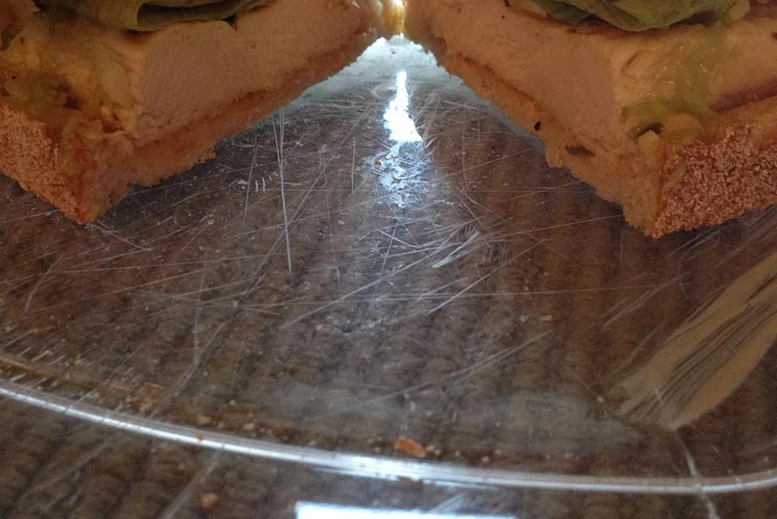

Pig Burger

How to make Pig Burger
Per Serving: 1012 calories; protein 54.6g; carbohydrates 62.9g; fat 58.8g;
cholesterol 157.5mg; sodium 1572.1mg.
Ingrediants
- 2 slices focaccia bread
- 1 tablespoon herb mayonnaise
- 1/8 cup shredded lettuce /li>
- 2 slices ripe tomato /li>
- 1/4 pound grilled chicken breast
- 3 slices bacon
- 2 tablespoons guacamole
Steps
-
Place bacon in a large, deep skillet. Cook over medium high heat until
evenly brown. Drain, crumble and set aside.
-
Toast focaccia. Spread mayonnaise on one side of one slice, then top
with lettuce, tomato, chicken, bacon and guacamole. Top with second
slice of focaccia.